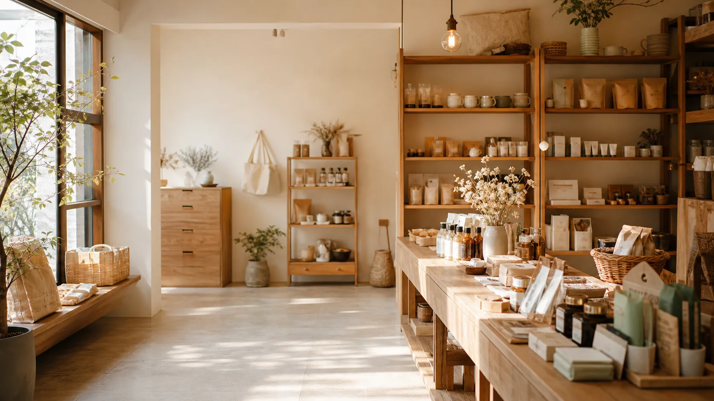

OUR PICKS
六種日常，慢慢挑。
不是把貨架塞滿，而是留一些真的會用到、拿來送人也不尷尬的東西。



ABOUT SUNLIT
我們不是什麼都賣。
2021 年，我們在嘉義文化路開了第一家店。一路走到現在，有六間門市和一個官網，還是只在意同一件事：讓你下次來的時候，知道可以放心拿什麼。
我們把選品想得實際一點——價格合理、使用清楚、放在家裡不突兀。至於那些不合適的，就先不放上貨架。
認識柳丁生活SIX STORES
在附近，找得到我們。
六家店各有一點不一樣，都是照著附近的人怎麼生活，慢慢長出來的樣子。


5 年從嘉義出發
6 間在地實體門市
6 類每天用得到的選品